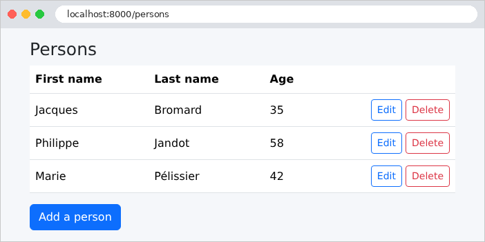
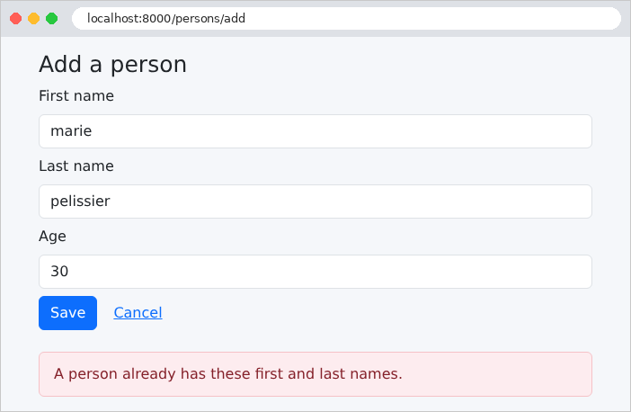

9. Arquitectura en capas y acceso a datos
Los ejemplos anteriores almacenaban sus datos en memoria o en el caché. Una aplicación real los almacena en una base de datos y se organiza en capas (véase el diagrama de la introducción):
- la capa web (controladores, vistas): lee la solicitud, llama a la capa de negocio y selecciona la vista;
- la capa de negocio: las reglas de negocio;
- la capa DAO (*Data Access Object*): las consultas a la base de datos.
Cada capa conoce solo la capa inferior, y los menos detalles posibles sobre ella: la capa web desconoce la capa SQL, y la capa de negocio desconoce la capa HTML. Esta separación hace que cada capa sea más fácil de entender, probar y evolucionar. El ejemplo 28 aplica esto a la gestión de una lista de personas: es, a menor escala, la gestión de los médicos y los clientes del caso de estudio.
En [PHP], el acceso a la base de datos se organiza en varias capas:
- la extensión PDO (*PHP Data Objects*) de [PHP] define una interfaz común a todos los módulos de SGBD: abrir una conexión, ejecutar un comando SQL y leer filas. Cada SGBD tiene su propio controlador: [pdo_mysql] para [MySQL] (y [MariaDB]), incluido con [PHP];
- el constructor de consultas (*query builder*) de [Laravel] (fachada [DB]) construye los comandos SQL a partir de llamadas a métodos ([where], [orderBy]...), independientemente del SGBD, y administra las conexiones y las transacciones;
- Eloquent, el ORM (*Object-Relational Mapper*) de [Laravel], asigna clases (modelos, tal como los define [Eloquent]) a tablas de la base de datos y transforma las filas recuperadas en objetos. Sigue el modelo llamado *Active Record*: cada objeto sabe cómo leerse y guardarse a sí mismo ([Person::find(1)], [$person->save()]).
Esto equivale a [JDBC], [JPA], y [Hibernate] en [Java], [Entity Framework Core] en [C#], o [SQLAlchemy] en [Python]. Observe una consecuencia del funcionamiento de [PHP]: como nada sobrevive a la solicitud, cada solicitud abre su propia conexión a la base de datos (en su primera solicitud SQL) y la cierra al terminar. No existe un grupo de conexiones como en [Java] o [Python]; abrir una conexión a [MySQL] en la misma máquina toma solo una fracción de milisegundo.
Este ejemplo requiere que un servidor [MySQL] (o [MariaDB]) esté en ejecución: el apéndice explica cómo instalar uno con [Laragon].
9.1. Ejemplo 28: un sistema de gestión de personal en tres capas
| 28-layers/
├── app/
│ ├── Dao/
│ │ └── PersonsDao.php
│ ├── Http/
│ │ ├── Controllers/
│ │ │ └── PersonsController.php
│ │ └── Requests/
│ │ └── PersonRequest.php
│ ├── Business/
│ │ ├── PersonData.php
│ │ ├── BusinessException.php
│ │ └── PersonsBusiness.php
│ └── Models/
│ └── Person.php
├── bootstrap/
│ └── app.php
├── database/
│ └── dbpersons.sql
├── public/
│ ├── css/
│ │ └── styles.css
│ └── js/
│ └── app.js
├── resources/
│ └── views/
│ ├── components/
│ │ └── field.blade.php
│ ├── fragments/
│ │ └── confirmation.blade.php
│ ├── layout.blade.php
│ └── persons/
│ ├── form.blade.php
│ └── list.blade.php
├── routes/
│ └── web.php
└── ...
|
9.1.1. La base de datos
La base de datos [dbpersons] se crea mediante el script SQL. Con [Laragon], puede ejecutarlo, por ejemplo, en la herramienta [HeidiSQL] (menú Archivo / Ejecutar archivo SQL), o desde la línea de comandos, en la carpeta del ejemplo:
| mysql -u root < database/dbpersons.sql
|
El archivo [database/dbpersons.sql]:
| -- base de datos del ejemplo 28: una sola tabla, [persons]
-- el script está escrito en UTF-8
SET NAMES utf8mb4;
DROP DATABASE IF EXISTS dbpersons;
CREATE DATABASE dbpersons CHARACTER SET utf8mb4 COLLATE utf8mb4_unicode_ci;
USE dbpersons;
CREATE TABLE persons (
id INT NOT NULL AUTO_INCREMENT,
-- la versión de la fila, incrementada en cada modificación (vea capa DAO)
version INT NOT NULL DEFAULT 0,
first_name VARCHAR(30) NOT NULL,
last_name VARCHAR(30) NOT NULL,
age INT NOT NULL,
PRIMARY KEY (id),
-- dos personas no pueden tener los mismos nombre y apellido
CONSTRAINT unq_persons_first_name_last_name UNIQUE (first_name, last_name)
) ENGINE = InnoDB;
INSERT INTO persons (first_name, last_name, age) VALUES
('Marie', 'Pélissier', 42),
('Jacques', 'Bromard', 35),
('Philippe', 'Jandot', 58);
|
- Línea 3: el script está escrito en [UTF-8]; esto se especifica al servidor para que los acentos de los datos ([Pélissier]) se conserven intactos;
- línea 5: el juego de caracteres [utf8mb4] acepta todos los caracteres (acentos, emojis, etc.). La intercalación [utf8mb4_unicode_ci] compara las cadenas sin distinguir mayúsculas ni acentos: para [MySQL], [pelissier], y [Pélissier] son iguales;
- línea 11: un número de versión, incrementado cada vez que se modifica la fila (véase «bloqueo optimista», más abajo);
- línea 17: una restricción de unicidad con nombre: la base de datos no permite dos personas con el mismo nombre y apellido. El nombre se usará para identificar el error.
[Laravel] también puede crear las tablas por sí mismo, mediante migraciones: [PHP] clases que describen, paso a paso, la creación y las modificaciones de cada tabla (comando [php artisan migrate]). Mantenemos un script SQL, común a todas las versiones del caso de estudio, que muestra exactamente lo que contiene la base de datos.
9.1.2. Configuración
La conexión a la base de datos se define en el archivo [.env]:
| # la conexión a la base de datos: el SGBD MySQL, en esta máquina (127.0.0.1), puerto 3306,
# la base de datos dbpersons, el usuario root sin contraseña (configuración de Laragon)
DB_CONNECTION=mysql
DB_HOST=127.0.0.1
DB_PORT=3306
DB_DATABASE=dbpersons
DB_USERNAME=root
DB_PASSWORD=
# true: las instrucciones SQL enviadas a la base de datos se muestran en la consola
DB_LOG=false
|
[DB_CONNECTION] hace referencia a una de las conexiones descritas por la configuración de [Laravel] ([mysql], [mariadb], [pgsql], [sqlite], [sqlsrv]); las líneas siguientes la configuran. Si su servidor tiene una contraseña, ingrésela en [DB_PASSWORD]. La conexión [mysql] se comunica con el servidor usando [utf8mb4], el juego de caracteres de la base de datos. [DB_LOG] es una variable que definimos nosotros, leída por [bootstrap/app.php]:
| <?php
// bootstrap/app.php: la aplicación del ejemplo 28
use Illuminate\Database\Events\QueryExecuted;
use Illuminate\Database\Events\TransactionBeginning;
use Illuminate\Database\Events\TransactionCommitted;
use Illuminate\Database\Events\TransactionRolledBack;
use Illuminate\Foundation\Application;
use Illuminate\Support\Facades\DB;
use Illuminate\Support\Facades\Event;
(require __DIR__.'/../../vendor/autoload.php')->addPsr4('App\\', __DIR__.'/../app/');
return Application::configure(basePath: dirname(__DIR__))
->withRouting(
web: __DIR__.'/../routes/web.php',
// la ruta que sirve Bootstrap (véase el ejemplo 15)
then: fn () => require __DIR__.'/../../common/bootstrap.php')
->withMiddleware()
->withExceptions()
->booted(function () {
// DB_LOG=true (archivo .env): cada instrucción SQL, y cada paso de una
// transacción, se muestra en la consola del servidor
if (env('DB_LOG')) {
DB::listen(fn (QueryExecuted $q) =>
error_log($q->sql.' '.json_encode($q->bindings, JSON_UNESCAPED_UNICODE)));
Event::listen(TransactionBeginning::class, fn () => error_log('BEGIN'));
Event::listen(TransactionCommitted::class, fn () => error_log('COMMIT'));
Event::listen(TransactionRolledBack::class, fn () => error_log('ROLLBACK'));
}
})
->create();
|
- Líneas 24–30: si [DB_LOG] es igual a [true], cada comando SQL se muestra en la consola. [DB::listen] registra una función llamada después de cada comando SQL, con un objeto [QueryExecuted] (el texto del comando, sus parámetros y su duración). [Event::listen] registra una función llamada para cada evento de un tipo dado: [Laravel] señala así, entre otras cosas, el inicio, la confirmación y la cancelación de las transacciones. Los eventos son otra manera, junto con el middleware, de intervenir en el funcionamiento del framework. (Leemos [env] directamente, por brevedad; una aplicación típica usaría un archivo de configuración; véase el ejemplo 25.)
No hay nada más que configurar: las clases de las tres capas las crea el contenedor de [Laravel], que inyecta la capa inferior en cada una (el controlador recibe la capa de negocio, y la capa de negocio recibe la capa DAO).
9.1.3. El modelo Person
| <?php
// app/Models/Person.php: una fila de la tabla [persons], un "modelo" de Eloquent
namespace App\Models;
use Illuminate\Database\Eloquent\Model;
// Model: la clase padre de las entidades de Eloquent, el ORM de Laravel. Las columnas
// de la tabla se convierten, sin declarar nada, en propiedades del objeto ($p->last_name)
class Person extends Model
{
// el nombre de la tabla (Eloquent lo deduciría del nombre de la clase: people)
protected $table = 'persons';
// la tabla no tiene las columnas created_at y updated_at que Eloquent mantiene por omisión
public $timestamps = false;
// las columnas que pueden asignarse de forma masiva: new Person([...]), update([...])
protected $fillable = ['first_name', 'last_name', 'age'];
// las conversiones de tipo, columna por columna
protected function casts(): array
{
return ['age' => 'integer', 'version' => 'integer'];
}
}
|
- Línea 10: un modelo [Eloquent] hereda de la clase [Model]. Las columnas de la tabla no se declaran: [Eloquent] lee la fila, y cada columna se convierte en una propiedad del objeto ([$p->last_name], [$p->version]). La clave primaria es, de forma predeterminada, la columna [id], generada por la base de datos ([AUTO_INCREMENT]);
- línea 13: la tabla asociada con la clase. [Eloquent] la derivaría por sí mismo a partir del nombre de la clase poniéndolo en plural (en inglés);
- línea 16: de forma predeterminada, [Eloquent] mantiene dos columnas, [created_at] y [updated_at], que supone presentes en todas las tablas. La nuestra no las tiene;
- línea 19: las columnas que pueden completarse «en bloque» a partir de un arreglo ([Person::create([...])]). Es una precaución: un arreglo proveniente de un formulario podría contener otras columnas ([version], [id]...), que no queremos que se completen de esta manera;
- Líneas 22–25: conversiones de tipo: el controlador convierte ciertas columnas numéricas en cadenas; [casts] garantiza que sean enteros. Existen conversiones para booleanos, fechas (objetos [Carbon]), decimales, arreglos (una columna JSON)...
9.1.4. La capa DAO
| <?php
// app/Dao/PersonsDao.php: la capa DAO, consultas, sin reglas de negocio
namespace App\Dao;
use App\Business\PersonData;
use App\Models\Person;
use Illuminate\Database\Eloquent\Collection;
use Illuminate\Support\Facades\DB;
class PersonsDao
{
// SELECT * FROM persons ORDER BY last_name, first_name
public function list(): Collection
{
return Person::orderBy('last_name')->orderBy('first_name')->get();
}
// SELECT * FROM persons WHERE id = ? LIMIT 1; null si la persona no existe
public function read(int $id): ?Person
{
return Person::find($id);
}
// una persona con los mismos nombre y apellido, distinta de [$exceptId]:
// SELECT * FROM persons WHERE first_name = ? AND last_name = ? AND id <> ? LIMIT 1
public function namesake(string $firstName, string $lastName, int $exceptId = 0): ?Person
{
return Person::where('first_name', $firstName)->where('last_name', $lastName)
->where('id', '<>', $exceptId)->first();
}
// INSERT INTO persons (first_name, last_name, age) VALUES (?, ?, ?); la base de datos genera
// el id, que Eloquent almacena en el objeto
public function add(PersonData $data): Person
{
return Person::create(['first_name' => $data->firstName, 'last_name' => $data->lastName,
'age' => $data->age]);
}
// el BLOQUEO OPTIMISTA: UPDATE ... SET ..., version = version + 1
// WHERE id = ? AND version = ?; devuelve el número de filas modificadas (0: la
// fila fue modificada, o eliminada, desde que se leyó)
public function edit(int $id, int $version, PersonData $data): int
{
return Person::where('id', $id)->where('version', $version)->update([
'first_name' => $data->firstName, 'last_name' => $data->lastName, 'age' => $data->age,
// DB::raw: una expresión SQL, escrita tal cual en la instrucción SQL
'version' => DB::raw('version + 1'),
]);
}
// DELETE FROM persons WHERE id = ?
public function delete(int $id): void
{
Person::whereKey($id)->delete();
}
}
|
La capa DAO contiene solo consultas, sin lógica de negocio. Cada método usa la conexión de la solicitud actual y participa en la transacción abierta, si existe, iniciada por la capa de negocio.
- Líneas 14–17: [Person::orderBy(...)] inicia una consulta sobre la tabla de personas; los métodos se encadenan ([orderBy] agrega un orden), y [get()] ejecuta la consulta. El resultado es una colección [Eloquent] (ejemplo 03) de objetos [Person];
- líneas 20–23: [find]: recuperación por clave primaria, o [null];
- líneas 27–31: [where(column, value)] agrega una condición de igualdad; [where(column, operator, value)] agrega cualquier condición. Los valores se pasan a la base de datos como parámetros del comando SQL (los marcadores [?]), y nunca se copian en su texto, lo que hace imposible la inyección SQL. [first()] devuelve la primera fila ([LIMIT 1]) o [null];
- líneas 35–39: [Person::create] crea el objeto a partir de un arreglo (dentro del alcance de [$fillable]) y lo inserta en la base de datos; [Eloquent] almacena en el objeto el identificador generado por la base de datos;
- líneas 44–51: la actualización, con un bloqueo optimista. El comando [UPDATE] tiene dos condiciones: el identificador de la persona y la versión leída cuando se mostró el formulario. Incrementa la versión en 1: [DB::raw] inserta tal cual una expresión SQL ([version + 1]), en lugar de un valor. Si otra solicitud ha modificado la fila mientras tanto, su versión ha cambiado y [UPDATE] no modifica ninguna fila: [update] devuelve el número de filas modificadas, que en este caso es 0. Este es el principio del bloqueo optimista: nada se bloquea, pero se detectan las modificaciones concurrentes. ([Eloquent] no administra por sí mismo un número de versión, a diferencia de [Hibernate] o [SQLAlchemy]: la condición se escribe a mano.);
- líneas 54–57: un [DELETE], construido de la misma manera ([whereKey]: una condición sobre la clave primaria).
9.1.5. La capa de negocio
| <?php
// app/Business/PersonData.php: los datos de una persona, tal como los transmite la capa web
namespace App\Business;
readonly class PersonData
{
public function __construct(
public string $firstName,
public string $lastName,
public int $age,
) {
}
}
|
Los datos de una persona, tal como la capa web los transmite a la capa de negocio: un objeto simple, sin relación con [Laravel].
| <?php
// app/Business/BusinessException.php: una regla de negocio rechaza la operación; el
// mensaje está destinado al usuario
namespace App\Business;
use RuntimeException;
class BusinessException extends RuntimeException
{
}
|
Una clase de excepción específica de la capa de negocio: una regla de negocio rechaza la operación, y el mensaje de la excepción está destinado al usuario. Hereda de [RuntimeException] sin agregarle nada: solo importa su nombre.
| <?php
// app/Business/PersonsBusiness.php: la capa de NEGOCIO, las reglas de negocio, y solo
// ellas. Cada operación que escribe es una TRANSACCIÓN: confirmada (COMMIT) si la
// función termina con normalidad, cancelada (ROLLBACK) si de ella sale una excepción
namespace App\Business;
use App\Dao\PersonsDao;
use App\Models\Person;
use Exception;
use Illuminate\Database\Eloquent\Collection;
use Illuminate\Database\QueryException;
use Illuminate\Support\Facades\DB;
class PersonsBusiness
{
private const NAMESAKE = 'A person already has these first and last names.';
private const MODIFIED = 'This record has been modified meanwhile: reload it.';
private const UNKNOWN = 'This person does not exist (anymore).';
public function __construct(private PersonsDao $dao)
{
}
public function list(): Collection
{
return $this->dao->list();
}
public function read(int $id): Person
{
return $this->dao->read($id) ?? throw new BusinessException(self::UNKNOWN);
}
public function add(PersonData $data): Person
{
try {
// DB::transaction: la función se ejecuta en una transacción
return DB::transaction(function () use ($data) {
// regla 1: no puede haber dos personas con el mismo nombre y apellido
if ($this->dao->namesake($data->firstName, $data->lastName)) {
throw new BusinessException(self::NAMESAKE);
}
return $this->dao->add($data);
});
} catch (QueryException $e) {
throw self::translate($e);
}
}
public function edit(int $id, int $version, PersonData $data): Person
{
try {
return DB::transaction(function () use ($id, $version, $data) {
$person = $this->read($id);
// regla 2: no modificamos un registro modificado mientras tanto por otra persona
if ($person->version !== $version) {
throw new BusinessException(self::MODIFIED);
}
if ($this->dao->namesake($data->firstName, $data->lastName, $id)) {
throw new BusinessException(self::NAMESAKE);
}
// el UPDATE "WHERE id = ... AND version = ..." no modificó ninguna fila:
// otra solicitud modificó el registro desde que se leyó
if ($this->dao->edit($id, $version, $data) === 0) {
throw new BusinessException(self::MODIFIED);
}
// el registro, leído de nuevo: sus nuevos valores y su nueva versión
return $this->read($id);
});
} catch (QueryException $e) {
throw self::translate($e);
}
}
public function delete(int $id): Person
{
return DB::transaction(function () use ($id) {
$person = $this->read($id);
$this->dao->delete($id);
return $person;
});
}
// dos adiciones simultáneas: la restricción de unicidad de la base de datos rechazó la
// segunda; getMessage() contiene el mensaje de MySQL, con el nombre de la restricción
private static function translate(QueryException $e): Exception
{
if (str_contains($e->getMessage(), 'unq_persons_first_name_last_name')) {
return new BusinessException(self::NAMESAKE, previous: $e);
}
return $e;
}
}
|
- líneas 17–21: los mensajes de las reglas de negocio;
- líneas 32–35: una persona inexistente es un error de negocio. El operador [??] acepta una expresión [throw] a su derecha: si la persona es [null], se lanza la excepción;
- líneas 37–51: regla n.º 1: no puede haber dos personas con el mismo nombre y apellido. [DB::transaction] ejecuta la función dentro de una transacción: si la función termina normalmente, la transacción se confirma ([COMMIT]), y [DB::transaction] devuelve el valor de la función; si se lanza una excepción, la transacción se revierte ([ROLLBACK]): ninguno de los cambios realizados dentro de la función se conserva, y la excepción continúa su camino. La capa de negocio determina así el alcance de las transacciones: una operación de negocio, una transacción. La regla se comprueba antes de escribir, y se lanza una [BusinessException] si no se cumple. Pero esta comprobación no es suficiente: dos solicitudes simultáneas podrían verificar ambas que no hay duplicado y luego insertar ambas los datos. La restricción de unicidad de la base de datos rechaza entonces el segundo [INSERT], y [Laravel] lanza una [QueryException], que el método [translate] transforma en la misma [BusinessException]. La base de datos es la última línea de defensa;
- líneas 53–76: regla n.º 2: no modificar un registro que haya sido modificado mientras tanto por otra persona. El formulario de actualización lleva la versión del registro que se leyó (en un campo oculto); si difiere de la versión actual, el registro ha cambiado desde que se mostró. Aquí también, la base de datos (mediante el bloqueo optimista de la capa DAO) detecta cuándo se produce una modificación concurrente entre la operación de lectura y la transacción [UPDATE]: la transacción [UPDATE] entonces no modifica ninguna fila. Luego se vuelve a leer el registro, con sus nuevos valores;
- líneas 78–85: la eliminación marca a la persona como eliminada para el mensaje de confirmación;
- líneas 89–95: [getMessage()] contiene el mensaje de [MySQL], incluido el nombre de la restricción violada. Cualquier otro error se devuelve tal cual: no es un error de negocio, sino un error de programación. El parámetro llamado [previous] adjunta la excepción original a la nueva para el registro.
9.1.6. La capa web
| <?php
// app/Http/Requests/PersonRequest.php: los campos del formulario y sus restricciones (véase el ejemplo 19)
namespace App\Http\Requests;
use App\Business\PersonData;
use Illuminate\Foundation\Http\FormRequest;
class PersonRequest extends FormRequest
{
public function rules(): array
{
return [
'first_name' => 'required|max:30',
'last_name' => 'required|max:30',
'age' => 'required|integer|between:0,150',
// la versión del registro, transportada por un campo oculto (solo en edición)
'version' => 'nullable|integer',
];
}
public function messages(): array
{
return [
'first_name.required' => 'The first name is required.',
'first_name.max' => '30 characters at most.',
'last_name.required' => 'The last name is required.',
'last_name.max' => '30 characters at most.',
'age.required' => 'The age is required.',
'age.integer' => 'The age must be an integer.',
'age.between' => 'The age must be between 0 and 150.',
];
}
// los datos validados, para la capa de negocio
public function personData(): PersonData
{
return new PersonData($this->validated('first_name'), $this->validated('last_name'),
(int) $this->validated('age'));
}
}
|
La solicitud de formulario (ejemplo 19). El campo oculto [version] es opcional (formulario de alta). El método [personData] devuelve los datos validados en el formato que espera la capa de negocio.
| <?php
// app/Http/Controllers/PersonsController.php: la capa WEB; solo conoce la capa de negocio
namespace App\Http\Controllers;
use App\Http\Requests\PersonRequest;
use App\Business\BusinessException;
use App\Business\PersonsBusiness;
use Illuminate\Http\RedirectResponse;
use Illuminate\View\View;
class PersonsController
{
public function __construct(private PersonsBusiness $business)
{
}
public function home(): RedirectResponse
{
return redirect()->route('persons.list');
}
public function list(): View
{
return view('persons.list', ['persons' => $this->business->list()]);
}
public function addForm(): View
{
return view('persons.form', ['title' => 'Add a person',
'action' => route('persons.add'), 'person' => null]);
}
// PersonRequest: un formulario no válido no llega hasta aquí (véase el ejemplo 19)
public function add(PersonRequest $request): RedirectResponse
{
try {
$p = $this->business->add($request->personData());
} catch (BusinessException $e) {
// una regla de negocio rechaza: de vuelta al formulario, con la entrada y el
// mensaje, al final de la página
return back()->withInput()->with('error', $e->getMessage());
}
return redirect()->route('persons.list')->with('success', "$p->first_name $p->last_name has been added.");
}
public function editForm(int $id): View|RedirectResponse
{
try {
$p = $this->business->read($id);
} catch (BusinessException $e) {
return redirect()->route('persons.list')->with('error', $e->getMessage());
}
return view('persons.form', ['title' => 'Edit a person',
'action' => route('persons.edit', $id), 'person' => $p]);
}
public function edit(PersonRequest $request, int $id): RedirectResponse
{
try {
$p = $this->business->edit($id, (int) $request->validated('version'), $request->personData());
} catch (BusinessException $e) {
return back()->withInput()->with('error', $e->getMessage());
}
return redirect()->route('persons.list')->with('success', "$p->first_name $p->last_name has been edited.");
}
public function delete(int $id): RedirectResponse
{
try {
$p = $this->business->delete($id);
} catch (BusinessException $e) {
// no hay formulario que mostrar de nuevo: el error viaja también como mensaje flash
return redirect()->route('persons.list')->with('error', $e->getMessage());
}
return redirect()->route('persons.list')->with('success', "$p->first_name $p->last_name has been deleted.");
}
}
|
- línea 14: la capa de negocio, la única capa que conoce el controlador;
- líneas 35–45: el proceso de alta, en tres pasos: validación del formulario (errores de entrada), realizada antes de llamar a la acción por la solicitud de formulario; la llamada a la capa de negocio (reglas de negocio); y luego el esquema PRG, con un mensaje flash de éxito. Una [BusinessException] vuelve al formulario: [back()] redirige a la página anterior (la página del formulario), [withInput()] conserva la entrada para [old] (ejemplo 19), y [with('error', ...)] devuelve el mensaje de error, que la plantilla mostrará al final de la página. Esto es exactamente lo que [Laravel] hace con un formulario inválido: los errores de entrada y los errores de lógica de negocio se tratan de la misma manera;
- líneas 47–56: el formulario de edición, rellenado con la persona recuperada. Si la persona no existe, se redirige al usuario a la lista con un mensaje de error emergente;
- líneas 58–66: la actualización, que sigue el mismo patrón que el alta;
- líneas 68–77: la eliminación. No hay formulario que volver a mostrar: cualquier error también se comunica en un mensaje emergente, [error].
La capa web no contiene SQL ni reglas de negocio: traduce la solicitud en una llamada a la capa de negocio y el resultado en una página. La tabla de rutas:
| <?php
// routes/web.php: las rutas del ejemplo 28
use App\Http\Controllers\PersonsController;
use Illuminate\Support\Facades\Route;
Route::controller(PersonsController::class)->name('persons.')->group(function () {
Route::get('/', 'home');
Route::get('persons', 'list')->name('list');
Route::get('persons/add', 'addForm')->name('addForm');
Route::post('persons/add', 'add')->name('add');
Route::get('persons/{id}/edit', 'editForm')->whereNumber('id')->name('editForm');
Route::put('persons/{id}', 'edit')->whereNumber('id')->name('edit');
Route::delete('persons/{id}', 'delete')->whereNumber('id')->name('delete');
});
|
- línea 7: dentro de un grupo, [name] proporciona un prefijo para los nombres de ruta: la ruta llamada [list] se llama en realidad [persons.list];
- Líneas 13–14: la modificación es una solicitud PUT y la eliminación es una solicitud DELETE, simuladas mediante formularios POST (ejemplo 21).
Las vistas:
| <!doctype html>
<html lang="en">
<head>
<meta charset="utf-8">
<title>Persons</title>
<link rel="stylesheet" href="{{ route('bootstrap', 'css/bootstrap.min.css') }}">
<link rel="stylesheet" href="{{ asset('css/styles.css') }}">
</head>
<body>
<div class="container py-3" style="max-width: 40rem">
{{-- el mensaje de éxito (mensaje flash [success]): en la parte superior --}}
@session('success')
<div class="alert alert-success" role="status">{{ $value }}</div>
@endsession
<main>
@yield('content')
</main>
{{-- el error (mensaje flash [error]): en la parte inferior --}}
@session('error')
<div class="error-area" role="alert">{{ $value }}</div>
@endsession
</div>
@include('fragments.confirmation')
<script src="{{ asset('js/app.js') }}"></script>
</body>
</html>
|
- líneas 12–14: el mensaje de éxito, en la parte superior de la página (ejemplo 20);
- líneas 19–21: el mensaje de error en la parte inferior de la página.
| @extends('layout')
@section('content')
<h1 class="h3">Persons</h1>
<table class="table align-middle">
<thead><tr><th>First name</th><th>Last name</th><th>Age</th><th></th></tr></thead>
<tbody>
@foreach ($persons as $p)
<tr>
<td>{{ $p->first_name }}</td>
<td>{{ $p->last_name }}</td>
<td>{{ $p->age }}</td>
<td class="text-end">
<a class="btn btn-sm btn-outline-primary" href="{{ route('persons.editForm', $p->id) }}">Edit</a>
<form method="post" class="d-inline" action="{{ route('persons.delete', $p->id) }}"
data-confirmation="Delete {{ $p->first_name }} {{ $p->last_name }}?">
@csrf
@method('DELETE')
<button class="btn btn-sm btn-outline-danger" type="submit">Delete</button>
</form>
</td>
</tr>
@endforeach
</tbody>
</table>
<a class="btn btn-primary" href="{{ route('persons.addForm') }}">Add a person</a>
@endsection
|
La lista incluye los enlaces y botones del ejemplo 21, junto con su ventana de confirmación (los archivos [fragments/confirmation.blade.php] y [public/js/app.js] son los del ejemplo 21).
| @extends('layout')
@section('content')
<h1 class="h3">{{ $title }}</h1>
<form method="post" action="{{ $action }}" novalidate>
@csrf
{{-- una edición: el método PUT, y la versión del registro leído --}}
@if ($person)
@method('PUT')
<input type="hidden" name="version" value="{{ old('version', $person->version) }}">
@endif
<x-field name="first_name" label="First name" :value="$person?->first_name" required maxlength="30" />
<x-field name="last_name" label="Last name" :value="$person?->last_name" required maxlength="30" />
<x-field name="age" label="Age" type="number" :value="$person?->age" required min="0" max="150" />
<button class="btn btn-primary" type="submit">Save</button>
<a class="btn btn-link" href="{{ route('persons.list') }}">Cancel</a>
</form>
@endsection
|
- Líneas 8–11: una vista común para el alta y la modificación de registros: para una modificación ([$person] no es [null]), el método PUT y el campo oculto que transporta la versión del registro leído. [old('version', $person->version)]: la versión ingresada previamente (después de volver al formulario), o la versión del registro;
- líneas 12–14: el componente del ejemplo 19, que también recibe el valor inicial del campo ([$person?->first_name]: [null] para un alta).
| {{-- un campo de entrada, con su etiqueta y su PRIMER mensaje de error (véase
el ejemplo 19); [value]: el valor inicial del campo, mostrado si el formulario
aún no se ha enviado --}}
@props(['name', 'label', 'type' => 'text', 'value' => null])
<div class="mb-2">
<label class="form-label" for="{{ $name }}">{{ $label }}</label>
<input {{ $attributes->class(['form-control', 'is-invalid' => $errors->has($name)]) }}
type="{{ $type }}" id="{{ $name }}" name="{{ $name }}"
@if ($type !== 'password') value="{{ old($name, $value) }}" @endif>
{{-- @error: el bloque se muestra solo si el campo tiene un error, cuyo
primer mensaje está en la variable $message --}}
@error($name)
<div class="invalid-feedback">{{ $message }}</div>
@enderror
</div>
|
- línea 4: el componente tiene un parámetro adicional, [value];
- línea 9: [old] acepta un valor predeterminado, que se usa si el formulario aún no se ha enviado: el valor inicial del campo.
9.1.7. Ejecución
La lista de personas:

Un formulario de alta rellenado incorrectamente: la capa web detecta los errores de entrada.

Un homónimo: la entrada es correcta, pero la capa de negocio rechaza el alta. Como la comparación la realiza la base de datos, ignora tanto las mayúsculas como los acentos: [marie pelissier] es un homónimo de [Marie Pélissier].

Un alta exitosa:

Para probar la regla n.º 2, abramos el mismo registro en dos pestañas. En la primera pestaña, cambiemos la edad y guardemos. En la segunda pestaña, que todavía muestra la versión anterior, modifiquemos también el registro:

La eliminación, con su confirmación:


9.1.8. Los comandos SQL
Reiniciemos la aplicación con la variable de entorno [DB_LOG=true] (en [Linux] y [macOS]: [DB_LOG=true php artisan serve]; para [Windows]: [$env:DB_LOG="true"] antes de [php artisan serve]; o modificando el archivo [.env]), y observemos en la consola los comandos SQL de una modificación. La visualización del formulario de modificación de la persona n.º 1:
| select * from `persons` where `persons`.`id` = ? limit 1 [1]
|
Una lectura por clave primaria, cuyo valor se pasa como parámetro ([?]), sin transacción: una lectura aislada no la requiere. Se guarda el registro con una nueva edad:
| BEGIN
select * from `persons` where `persons`.`id` = ? limit 1 [1]
select * from `persons` where `first_name` = ? and `last_name` = ? and `id` <> ? limit 1 ["Marie","Pélissier",1]
update `persons` set `first_name` = ?, `last_name` = ?, `age` = ?, `version` = version + 1 where `id` = ? and `version` = ? ["Marie","Pélissier",44,1,1]
select * from `persons` where `persons`.`id` = ? limit 1 [1]
COMMIT
|
En una sola transacción, se observan: la lectura del registro maestro, la búsqueda de un homónimo, el [UPDATE] y la relectura. El [UPDATE] incrementa la versión ([version + 1], escrito tal cual gracias a [DB::raw]), y establece la condición del bloqueo optimista ([and version = ?], con la versión leída, aquí 1). [Laravel] rodea los nombres de tablas y columnas con acentos graves ([persons]), que es la forma en que se escriben estos nombres en [MySQL]. Ahora enviemos el mismo formulario por segunda vez, todavía con la versión 1:
| BEGIN
select * from `persons` where `persons`.`id` = ? limit 1 [1]
ROLLBACK
|
La versión leída (2) no es la misma que la del formulario (1): la capa de negocio lanzó una [BusinessException], que revirtió la transacción ([ROLLBACK]), y la página muestra «Este registro ha sido modificado mientras tanto: vuelva a cargarlo». Del mismo modo, el proceso de alta de un homónimo se detiene después de la búsqueda del homónimo, sin un [INSERT].